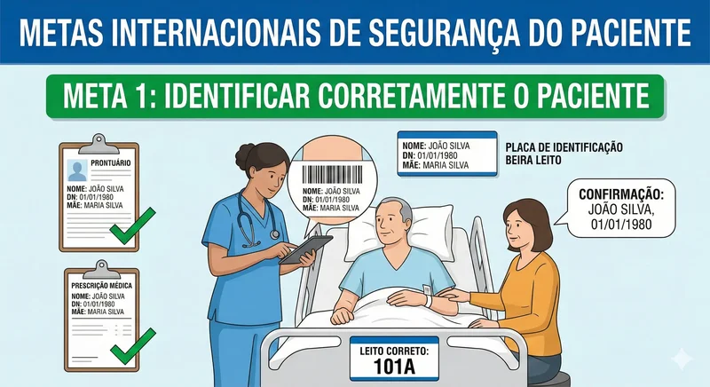
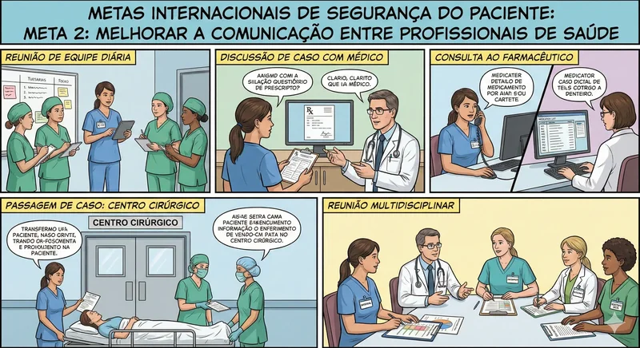
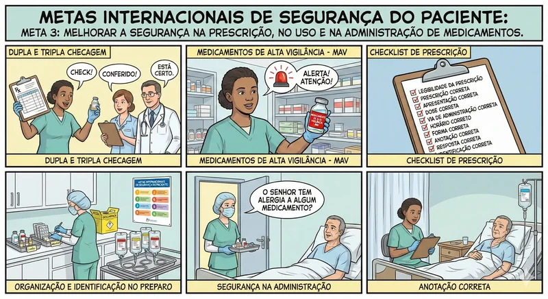
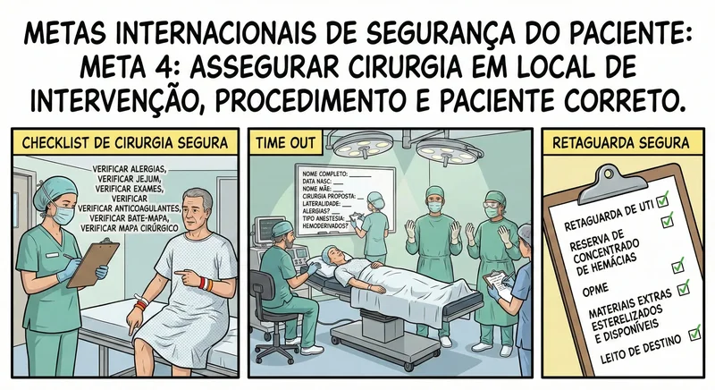
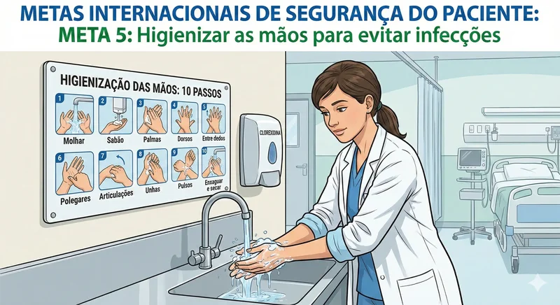
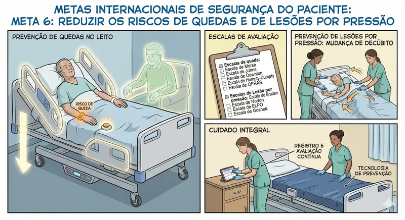

Metas Internacionais de Segurança do Paciente

As metas internacionais de segurança do paciente são diretrizes estabelecidas para garantir um ambiente seguro e reduzir riscos nos cuidados de saúde. Elas são um esforço conjunto da Organização Mundial da Saúde (OMS) e da Joint Commission International (JCI).
A implementação dessas metas contribui para um ambiente de cuidados mais seguro, reduzindo danos aos pacientes, promovendo a qualidade da assistência e otimizando resultados em saúde. Ao usar nossas escalas e calculadoras você verá por muitas vezes a referencia de alguma meta de acordo com a escala ou a calculadora, isso visa reforçar atenção nos cuidados e trabalhar na aeducação em saúde.
As 6 Metas Internacionais de Segurança do Paciente são:
-
Identificar corretamente o paciente
Garantir que o paciente receba o atendimento e procedimentos corretos, usando pelo menos dois identificadores (ex: nome completo e data de nascimento).Medidas:
- Pulseira de identificação com nome completo, data de nascimento, nome da mãe, enfermaria e leito, número da ficha de atendimento.
- Placa de identificação beira leito
- Conferir se os dados completos do paciente sao exatamente iguais no prontuario, na prescrição médica, no exame laboratoriais
- Verificar verbalmente junto ao paciente e acompanhante o nome completo, a data de nascimento, o nome da mãe e a presença de alergias
- Verificar no sistema se a FAA do paciente é a mesma dos arquivos de prontuário
- Não deixar dois pacientes com o mesmo nome no mesmo quarto, caso isso ocorra comunique seu enfermeiro, enfermeiro comunique o Núcleo interno de regulação de vagas (NIR) e solicite a transferencia de um dos pacientes para outro quarto.
- Pulseiras de identificação de alergias, risco de queda e risco de broncoaspiração
- Nunca falar o nome completo do paciente para o proprio paciente confirmar, isso pode induzir o paciente ao erro. Faça perguntas sem resposta esperando a resposta correta do paciente referente aos seus dados.

-
Melhorar a comunicação efetiva
Assegurar que as informações importantes sobre o paciente sejam comunicadas de forma clara, completa e oportuna, especialmente entre as transições de cuidado.Medidas (exemplos):
- Na mesma unidade faça passagem de plantão na troca de turno a beira leito com SBAR E Prescrição medicas em mãos
- Admissão de pacientes: (Da origem) ao destino (Sua enfermaria) seja ela pessoalmente ou por contato telefônico, o importante é que tudo seja passado: Hipótese diagnóstica, idade, breve historico da internação, conduta estabelecida até o momento, alergias, cirurgias preveas, medicamentos que o paciente faz uso, comorbidades, algum tipo de isolamento, presença de lesoes, exames, presença ou nao de acompanhante etc..
- Admissão e o (NIR): O núcleo interno de regulação deverá entrar em contato informando sobre a admissão, caso voce já possua dados sobre isolamento, hemocultura, acompanhante etc, passe essas informações ao NIR, muitas vezes a vaga regulada a este paciente nao é a mais adequada devido a esses critérios.
- Pacientes que irão ao bloco operatório: Se vocÊ é o enfermeiro do bloco faça a visita de enfermagem pré operatória, caso voce encaminhe um paciente ao bloco operatório o plantão deverá ser passado relatando o plano de tratamento estabelecido até o momento, historico, comorbidades, alergias e todo os itens do checklist cirurgico in loco ou ao telefone importante é que todas as informações essenciais sejam relatadas e todos os formulários estejam checados e carimbados. Quem encaminha o paciente ao bloco operatório realiza novamente todas as etapas de passagem de plantao e checklist cirúrgico.
- Comunicação enfermeiro e médico: Se seu assunto é devidamente sobre um paciente procure conhecer seu paciente, são muitos pacientes, por vezes nem o médico conhece seus pacientes pelo nome completo e leito. Conheça o paciente da discussão clínica, veja os exames recentes, procure estar por dentro do tratamento e da situação clinica do paciente no instante que solicitar suporte médico.
- Dupla e tripla checagem de medicamentos prescritos: Técnico de enfermagem, nao importa o quão ocupado esteja o enfermeiro, Medicamentos e alta vigilância (MAV) necessitam de dupla checagem e da presença do enfermeiro durante a preparação de farmaco e a conferÊncia em conjunto da prescrição do MAV. Enfermeiro solicite suporte clínico do farmaceutico clínico ou do médico plantonista para realizar a tripla checagem em MAV'S.'
- Tranferencia de pacientes para outras unidades como UTI: Se o paciente apresentou um deterioração clínica e precisa ser transferido para UTI, enfermeiro, verifique com o medico sobre o contato medico-medico (UTI), após este contato realize a passagem de plantão ao enfermeiro intensivista: identificação do paciente, idade, padrão respiratorio no momento, conduta estabelecida no momento da deterioração, grau de complexidade do paciente no momento, ESCALA DE COMA DE GLASGOW, comorbidades, alergias, isolamentos, exames de imagem e data aproximada feitos na internação, se a transferência for realizada com via aérea avançada o "time" (tempo) dessa passagem de plantão deverá ser o quanto antes, haja vista que a UTI necessitará preparar ventilador, bombas de infusao etc... para receber o paciente.
- Reunião e visitas multidisciplinares
- Mudanças no estado clínico do paciente: Técnico de enfermagem: comunicar ao enfermeiro alterações de sinais vitais, de comportamento cognitivo, nutricional etc... Enfermeiro em caso de mudanças (não graves) no estado clinico do pacientes referentes a nutrição, locomoção, necessidades fisiologicas, psiquicas e sociais comunicar equipe multiprofissional.

-
Melhorar a segurança na prescrição, no uso e na administração
de medicamentos
Reduzir os riscos relacionados a medicamentos de alta vigilância, erros de prescrição, armazenamento e administração de fármacos.
-
Assegurar cirurgia em local, procedimento e paciente
corretos
Implementar protocolos de verificação pré-operatória, marcação do local cirúrgico e “pausa cirúrgica” antes do início do procedimento.
-
Hienizar as mãos para previnir infecções
Promover práticas de higiene das mãos, controle de antimicrobianos, uso de equipamentos estéreis e controle ambiental.
-
Reduzir o risco de danos ao paciente em decorrência de
quedas e de Lesões por pressão
Avaliar e monitorar pacientes com risco de queda e Lesões por pressão e implementar medidas preventivas.Medidas:
- Cama baixa
- Grades elevadas
- Aplicar escala de Morse e outras escalas de riscos para quedas
- Piso sempre seco
- Iluminação adequada
- Campainha de chamada ao alcance do paciente
- Identificação de risco de queda
- Presença de acompanhante, quando indicado
- Realizar mudança de decúbito em pacientes de alta complexidade de 2 em 2 horas
- Uso de Colchão piramidal
- Uso de colxins
- Aplicação da Escala de Braden e outras escalas para avaliar riscos de Lesões por pressão
